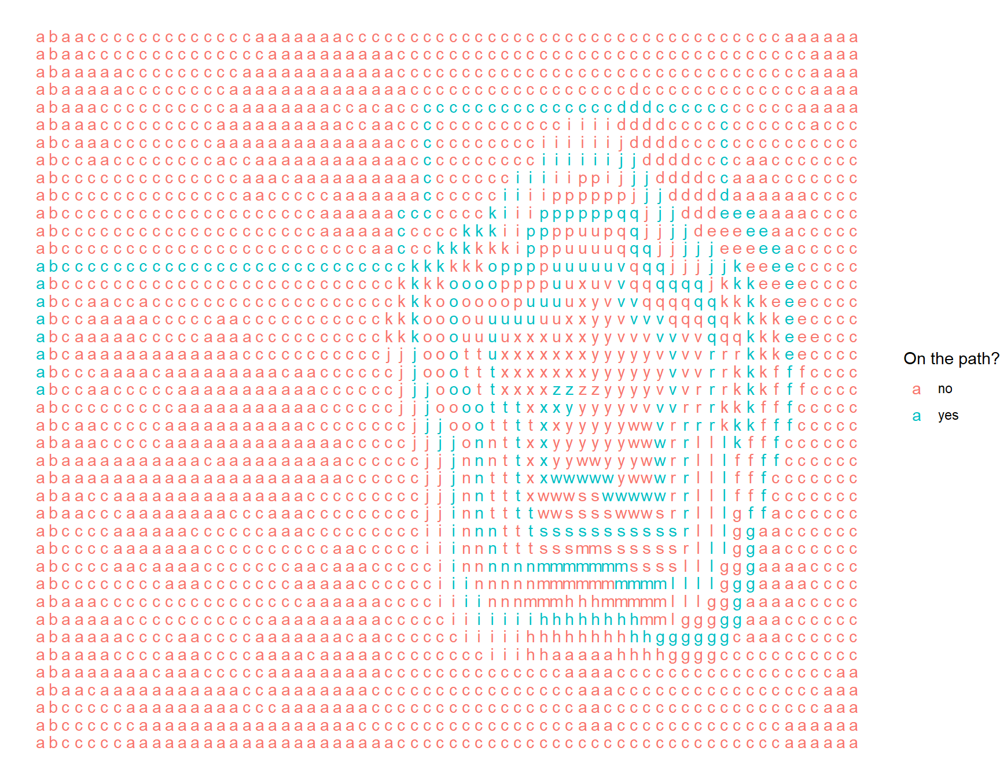

library(stringr)
filepath <- here::here("./posts/data/aoc/day12_input.txt")
commands <- readLines(filepath)
#find the size of the map
num_rows <- length(commands)
num_cols <- nchar(commands[[1]])Finding the best path using a breadth-first search algorithm.
Introduction
This post explains my solution to the Advent of Code problem from Day 12. You need to find a path to a location at a higher elevation in order to contact the elves with your communication device. You are able to use the device to get a height-map of the surrounding area which is in a similar format as shown below.
Sabqponm
abcryxxl
accszExk
acctuvwj
abdefghiIn this height-map, the lowest elevation is given by “a”, the highest elevation is given by “z” and the intermediate elevations ascend in alphabetical order. Your starting position is given by “S” and the goal is to reach “E”. You can only ascend at most one level in each step but you can descend more than one level.
Loading the input file
The height-map data is then parsed into a matrix using a similar approach as I used in Day 8 using the str_split_1 function from the stringr package.
raw_map <- character()
for (i in 1:length(commands)) {
raw_map <- c(raw_map, as.character(str_split_1(commands[i], "")))
}
contour_map <- matrix(raw_map, nrow = num_rows, ncol = num_cols, byrow = TRUE)Part One: Find best path from Start to End
We can find the start and end points in the matrix using the which function. Once the locations have been identified, we can convert the “S” to an “a” and “E” to a “z” to make the path finding code more straightforward.
start <- which(contour_map == "S", arr.ind = T)
end <- which(contour_map == "E", arr.ind = T)
contour_map[start[1], start[2]] <- "a"
contour_map[end[1], end[2]] <- "z"A breadth-first search algorithm was used to find the best path. A queue is used to store the active path end locations and the number of steps which have been traversed. The key checks before adding a new path end to the queue are the following:
- Check if new location is on the map
- Check if new location has not already been visited
- Check if new location is not more than 1 height difference from current location
- Check if new location is already present in the queue
If all checks pass, the new path end location and distance is added to the queue as captured in the following function:
add_to_queue <- function(con_map, cur_loc, new_loc, queue) {
if (new_loc[1] < 1 | new_loc[1] > num_rows) {
#do nothing if off the map
} else if (new_loc[2] < 1 | new_loc[2] > num_cols) {
#do nothing if off the map
} else if (con_map[new_loc[1], new_loc[2]] == "*") {
#do nothing if already visited
} else if (match(con_map[new_loc[1], new_loc[2]], letters) - match(con_map[cur_loc[1], cur_loc[2]], letters) > 1) {
#do nothing if inaccessible
} else {
#add to queue
if (list(new_loc) %in% queue == FALSE){
queue <- c(queue, list(new_loc))
}
}
return(queue)
}Beginning at the start location, new points in each direction are checked with the add_to_queue function and added to the end of the queue if passing the checks. The points are then iteratively checked until the end location is reached. A while loop is used to continue this process until reached_end is TRUE. A loop count was added for troubleshooting and keep the loop from running forever if the logic was not quite right.
#initialization
reached_end <- FALSE
con_map <- contour_map
loop_count <- 1
d <- 0
queue <- list(c(start[1], start[2], d))
while (reached_end == FALSE & loop_count < 3000) {
#points to N, E, S, W
cur_loc <- queue[[1]]
temp <- list(c(cur_loc[1]-1, cur_loc[2], cur_loc[3]+1),
c(cur_loc[1], cur_loc[2]+1, cur_loc[3]+1),
c(cur_loc[1]+1, cur_loc[2], cur_loc[3]+1),
c(cur_loc[1], cur_loc[2]-1, cur_loc[3]+1))
#check points in each direction from current location
for (location in temp) {
queue <- add_to_queue(con_map, cur_loc, location, queue)
}
#remove current location from queue
queue <- queue[-1]
#set location at * meaning already visited
con_map[cur_loc[1], cur_loc[2]] <- "*"
#check if end location is in queue and, if so, set reached_end to TRUE
for (i in 1:length(queue)){
if (sum(queue[[i]][1:2] == c(end[1], end[2])) == 2) {
reached_end <- TRUE
d <- queue[[i]][3]
}
}
loop_count <- loop_count + 1
}The distance is saved to d.
print(paste("The number of steps to the end location is:", d))[1] "The number of steps to the end location is: 370"Part Two: Best path starting from any “a” location
The next part asks which path has the least number of steps from to the end goal but, this time, starting from any “a” location on the height-map. One could consider checking the number of steps from every “a” location in the map and then find the minimum however this is not the optimal approach. Instead, you can reverse the search starting at the end location and finding the minimum steps to any “a”.
The add_to_queue function is modified to now that we are descending rather than ascending which only requires changing one line. This modified function is named add_to_queue2 however it should be noted that this approach would also work for Part One.
add_to_queue2 <- function(con_map, cur_loc, new_loc, queue) {
if (new_loc[1] < 1 | new_loc[1] > num_rows) {
#do nothing if off the map
} else if (new_loc[2] < 1 | new_loc[2] > num_cols) {
#do nothing if off the map
} else if (con_map[new_loc[1], new_loc[2]] == "*") {
#do nothing if already visited
} else if (match(con_map[new_loc[1], new_loc[2]], letters) - match(con_map[cur_loc[1], cur_loc[2]], letters) < -1) {
#do nothing if inaccessible - logic was changed as we are now backtracking
} else {
#add to queue
if (list(new_loc) %in% queue == FALSE){
queue <- c(queue, list(new_loc))
}
}
return(queue)
}The code for finding the best path is very similar as for Part One. There are two main changes: 1) the starting point is changed to the end location and 2) the check to see whether the goal is reached is performed by checking if the location in the queue is an “a”.
#initialization
reached_end <- FALSE
con_map <- contour_map
loop_count <- 1
d <- 0
#need to start at "E" - the desired end point
queue <- list(c(end[1], end[2], d))
while (reached_end == FALSE & loop_count < 3000) {
#points to N, E, S, W
cur_loc <- queue[[1]]
temp <- list(c(cur_loc[1]-1, cur_loc[2], cur_loc[3]+1),
c(cur_loc[1], cur_loc[2]+1, cur_loc[3]+1),
c(cur_loc[1]+1, cur_loc[2], cur_loc[3]+1),
c(cur_loc[1], cur_loc[2]-1, cur_loc[3]+1))
for (location in temp) {
#now using the backtracking function
queue <- add_to_queue2(con_map, cur_loc, location, queue)
}
#remove current location from queue
queue <- queue[-1]
#set location at * meaning already visited
con_map[cur_loc[1], cur_loc[2]] <- "*"
#check if queue location is "a" and, if so, set reached_end to TRUE
for (i in 1:length(queue)){
if (con_map[queue[[i]][1], queue[[i]][2]] == "a") {
reached_end <- TRUE
d <- queue[[i]][3]
}
}
loop_count <- loop_count + 1
}print(paste("The minimum number of steps from any 'a' location to the end location is:", d))[1] "The minimum number of steps from any 'a' location to the end location is: 363"Bonus: what actually is the path?
After solving the Day 12 problem, I had this burning question of how would you actually find the best path using this approach. The solution to the problem so far had only required knowing the number of steps to get to the end goal and not the route to take. In order to answer this additional question, the steps to reach the end location needs to be saved for each active path end. This requires a change to the queue where we now save each path as a list within a list. The add_to_queue function needs to be modified again related to checking if the new series of steps in already in the queue. As written, another check is needed to see if the current location has been already visited.
add_to_queue3 <- function(con_map, cur_loc, new_loc, queue) {
if (new_loc[1] < 1 | new_loc[1] > num_rows) {
#do nothing if off the map
} else if (new_loc[2] < 1 | new_loc[2] > num_cols) {
#do nothing if off the map
} else if (con_map[new_loc[1], new_loc[2]] == "*") {
#do nothing if already visited
} else if (con_map[cur_loc[1], cur_loc[2]] == "*") {
#do nothing if already visited
} else if (match(con_map[new_loc[1], new_loc[2]], letters) - match(con_map[cur_loc[1], cur_loc[2]], letters) > 1) {
#do nothing if inaccessible
} else {
#add path to end of queue if not already existing
if (sum(c(queue[[1]], list(new_loc)) %in% queue) == 0){
queue <- c(queue, list(c(queue[[1]], list(new_loc))))
#print(queue)
}
}
return(queue)
}The best path for Part One is now determined taking into account the new list within a list structure.
reached_end <- FALSE
con_map <- contour_map
loop_count <- 1
d <- 0
whereinq <- 0
#now the path are nested
queue <- list(list(c(start[1], start[2], d)))
while (reached_end == FALSE & loop_count < 30000) {
#points to N, E, S, W
cur_loc <- queue[[1]][[length(queue[[1]])]] #new nested scheme - take last location in path
temp <- list(c(cur_loc[1]-1, cur_loc[2], cur_loc[3]+1),
c(cur_loc[1], cur_loc[2]+1, cur_loc[3]+1),
c(cur_loc[1]+1, cur_loc[2], cur_loc[3]+1),
c(cur_loc[1], cur_loc[2]-1, cur_loc[3]+1))
for (location in temp) {
#print(location)
queue <- add_to_queue3(con_map, cur_loc, location, queue)
}
queue <- queue[-1]
con_map[cur_loc[1], cur_loc[2]] <- "*"
# if (list(c(end_row, end_col)) %in% queue) {
# reached_end <- TRUE
# }
for (i in 1:length(queue)){
if (sum(queue[[i]][[length(queue[[i]])]][1:2] == c(end[1], end[2])) == 2) {
reached_end <- TRUE
d <- queue[[i]][[length(queue[[i]])]][3]
whereinq <- i
}
}
loop_count <- loop_count + 1
}Let’s plot the best path using the original height-map layout. We will accomplish this plot by converting the list containing the best path into a table and the matrix containing the height-map into a long-form table.
#Load tidyverse libraries
library(tidyr)
library(dplyr)
library(ggplot2)
#Long-form table for the height-map
contour_data <- contour_map |>
as_tibble() |>
mutate(row_id = row_number()) |>
pivot_longer(cols = starts_with("V"), names_to = "name", values_to = "value") |>
mutate(col_id = as.integer(sub("V", "", name)))|>
select(row_id, col_id, value)
head(contour_data)# A tibble: 6 × 3
row_id col_id value
<int> <int> <chr>
1 1 1 a
2 1 2 b
3 1 3 a
4 1 4 a
5 1 5 c
6 1 6 c best_path <- as_tibble(queue[[length(queue)]], .name_repair = "minimal")
best_path <- as_tibble(t(best_path), .name_repair = "minimal")
names(best_path) <- c("row_id", "col_id", "d")
head(best_path)# A tibble: 6 × 3
row_id col_id d
<dbl> <dbl> <dbl>
1 21 1 0
2 20 1 1
3 19 1 2
4 18 1 3
5 17 1 4
6 16 1 5Now, a left-join is used to merge the best path with the original height-map for plotting purposes.
plot_data <- left_join(contour_data, best_path, by = c("row_id", "col_id"))Finally, we visualize the path taken.
p1 <- plot_data |>
rowwise() |>
mutate(onpath = ifelse(is.na(d), "no", "yes")) |>
ungroup() |>
ggplot(aes(x = col_id, y = row_id, label = value, color = factor(onpath))) +
geom_text() +
scale_y_reverse() +
labs(color = "On the path?") +
theme_void()
p1
Summary
The day 12 problem was solved by implementing a breadth-first search algorithm in R. The key to solving Part Two was to realize the path could be solved backwards from the end goal to identify the first time an “a” was found. It would have taken a great deal more computing power to find the path from every “a” in the input dataset as there were many. As a bonus, Part One was implemented in a manner so that the actual path could be saved and plotted. There are some inefficiencies in the code but it did the job and found the correct solutions.
Expand for Session Info
─ Session info ───────────────────────────────────────────────────────────────
setting value
version R version 4.2.2 (2022-10-31 ucrt)
os Windows 10 x64 (build 19045)
system x86_64, mingw32
ui RTerm
language (EN)
collate English_United States.utf8
ctype English_United States.utf8
tz America/Chicago
date 2023-08-01
pandoc 3.1.1 @ C:/Program Files/RStudio/resources/app/bin/quarto/bin/tools/ (via rmarkdown)
quarto 1.3.353 @ C:\\PROGRA~1\\RStudio\\RESOUR~1\\app\\bin\\quarto\\bin\\quarto.exe
─ Packages ───────────────────────────────────────────────────────────────────
! package * version date (UTC) lib source
P dplyr * 1.1.2 2023-04-20 [?] CRAN (R 4.2.3)
P ggplot2 * 3.4.2 2023-04-03 [?] CRAN (R 4.2.3)
P sessioninfo * 1.2.2 2021-12-06 [?] CRAN (R 4.2.1)
P stringr * 1.5.0 2022-12-02 [?] CRAN (R 4.2.2)
P tidyr * 1.3.0 2023-01-24 [?] CRAN (R 4.2.3)
[1] C:/Users/David Zoller/AppData/Local/Temp/RtmpQbQ1zv/renv-use-libpath-1dd84e02a8e
[2] C:/Users/David Zoller/Documents/datadavidz.github.io/renv/library/R-4.2/x86_64-w64-mingw32
[3] C:/Users/David Zoller/AppData/Local/R/cache/R/renv/sandbox/R-4.2/x86_64-w64-mingw32/30182023
P ── Loaded and on-disk path mismatch.
──────────────────────────────────────────────────────────────────────────────